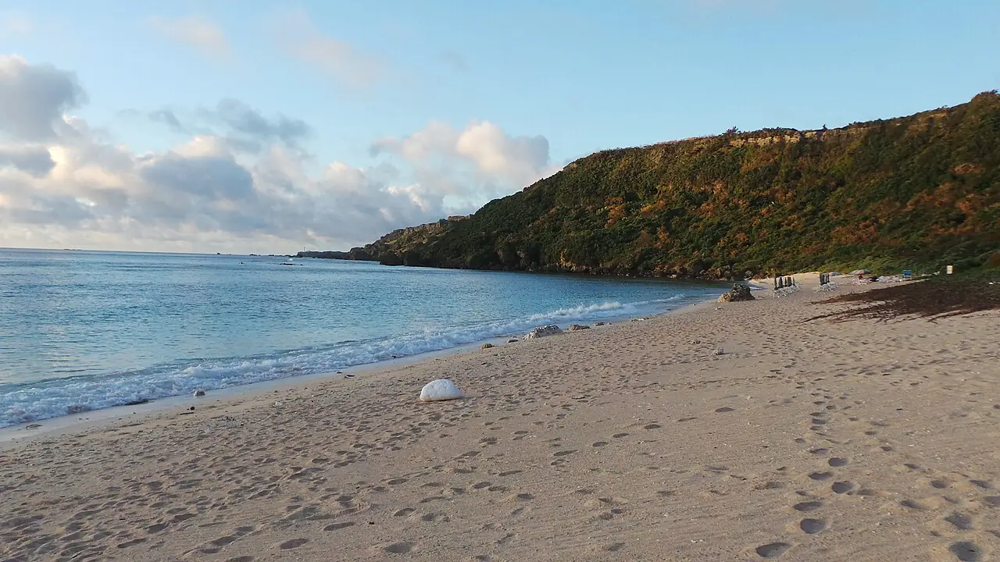

Plage de Yoshino
Miyakojima, Okinawa, Japon · snorkeling, baignade

Petite plage de la côte est de Miyako, où le récif corallien commence à quelques mètres du bord. Un classique du snorkeling facile parmi les poissons de récif.
- Lieu
- Miyakojima, Okinawa, Japon
- Niveau
- Débutant
- Activités
- snorkeling, baignade
- Type d'eau
- Mer / océan
- Coordonnées
- 24.75, 125.44 (position approximative du secteur)
Dangers à connaître
- Coraux peu profonds à marée basse : ne marche pas dessus.
- Cuboméduses (habu-kurage) possibles en été : suis les consignes locales.
Le conseil d'Ocean Buddy
Viens plutôt à marée haute : à marée basse, le platier affleure et il faut aller plus loin pour nager au-dessus des coraux.
Ouvrir dans Ocean Buddy Télécharger sur l'App Store
Source : Fiche Ocean Buddy · septembre 2026 · à vérifier localement.